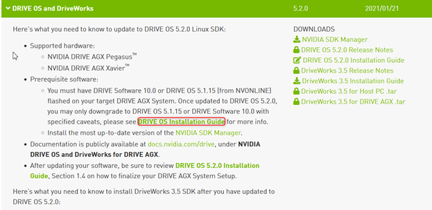
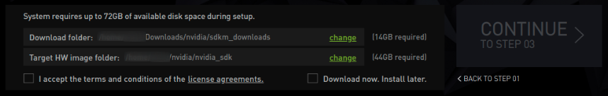
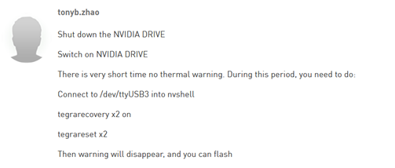

Installation
Introduction
The overall introduction of the developer Kit is available in the link below:
https://developer.nvidia.com/drive/drive-agx
In this page, there is a emended video about how to set up the developer kit, however the video is too rough and lost many details. For more detailed information you may go to the “Downloads” tab(https://developer.nvidia.com/drive/downloads) to read the installation guide for the specified version of Drive OS and DriveWorks you want to install.

Drive OS installation
In this procedure we need a host PC, which has a Ubuntu Desktop 18.04 LTS and working Internet connection. Firstly the Nvidia driver should be updated to the latest version. Then SDK manager should be installed in the PC. With the SDK manager the specific version of Drive OS can be installed automatically in both host system and target board. The detailed process of installation is available in this link: https://docs.nvidia.com/drive/drive-os-5.2.0.0L/drive-qsg-dz/install-with-sdkm-drive/index.html There are 4 steps of the installation via SDK manager.
During Step 3 there could be some error alarms pop out, due to unstable Internet connection in the office, in this case we just need to repeat the procedure to finish installation. In order to avoid too frequent repetition, I suggest to enable the option “Download now. Install later” as you can see in the picture below, which means we firstly download all the packages, and then go back to Step 2 to install them.

DriveWorks installation
In the first attempt of the environment setup we installed DriveOS 5.2.6, and successfully installed GUI by following the tutorial in this link: https://docs.nvidia.com/drive/drive-os-5.2.0.0L/drive-os/index.html#page/DRIVE_OS_Linux_SDK_Development_Guide/Interfaces/sys_components_file_ubuntu.html#wwpID0E0GB0HA. After that, we downloaded DriveWorks 4.0 and tried to install it on the target board, however, lots of dependency unmet are reported, which is difficult to be solved one by one. The same issue happened when we tried to install the DriveWorks in the host. We supposed there could be a irreversible mistake during the installation, therefore we decided to reflash Drive OS to repeat the procedure. In this time, the flashing progress was stuck at 99% for such a long time that the process failed eventually, meanwhile a thermal alarm was false qualified for the debug USB port(ttyUSB3). For the details of the issue you may refer to the issue we created in the Nvidia technical forum(https://forums.developer.nvidia.com/t/drive-agx-target-board-is-unable-to-flash-drive-os-5-2-6/195100). In the forum, many people encountered the same problem as us, it could be a unknown bug in the developer kit. Fortunately, the issue was solved by following the experience of another participate.

After that we flashed the host PC and target board with Drive OS 5.2.0(afraid there could be other unknown bugs in 5.2.6). In this time we installed Drive Works prior to GUI on the target board with SSH server. Before Drive Works installation, we should pay more attentions to the preconditions:
libx11-dev
libxrandr-dev
libxcursor-dev
libxxf86vm-dev
libxinerama-dev
libxi-dev
libglu1-mesa-dev
libglew-dev
libgles2-mesa-dev
Make sure all the packages are successfully installed, therefore I suggest install them one after another with “sudo apt install” command. If you forget to install some of them, and execute “$ sudo dpkg -i” to install Drive Works, there will definitely be an error. The only thing you need to do is to remove the failed installation completely by following the commands below:
sudo apt-get remove [package_name]
sudo apt-get purge [package_name]
sudo apt-get autoremove
sudo apt-get clean
Finally use “dpkg --list” to check if DriveWorks is still on the list.
I found the .deb file driveworks_cross-XXXX.deb for cross compile is located in the package for target board, but it can only be successfully installed in host PC, because it is only compatible for X86 system rather than ARM. I have no idea why Nvidia release the package like that.